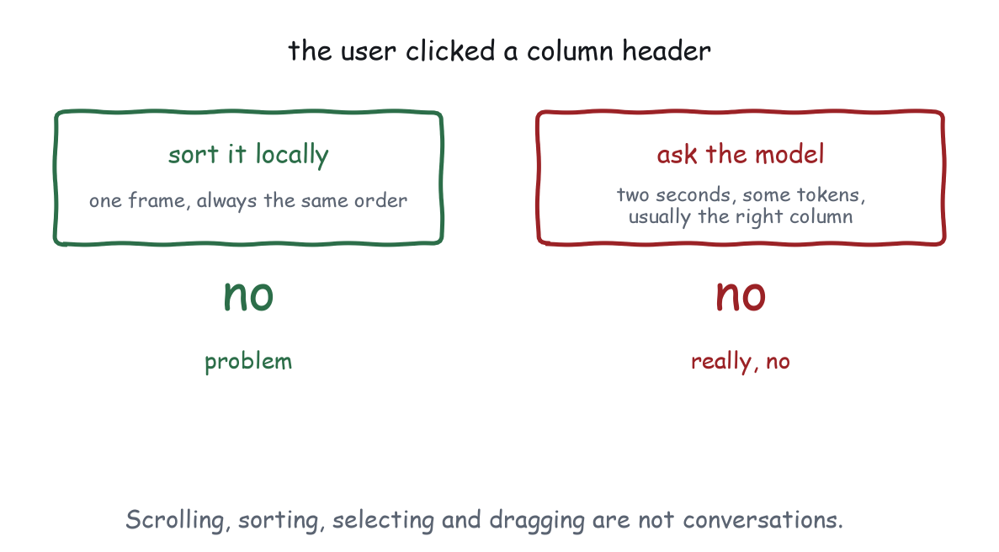

Chapter 3
The Local-First Principle
Sorting a column is not a conversation. Where the agent boundary goes, why it goes there, and what it costs when it goes somewhere else.
Here is a design that keeps getting built. A table appears in the chat. The user clicks a column header to sort it. The click sends a message to the model, the model decides what sorting by that column means, the model calls a tool, the tool returns the rows in a new order, the view re-renders.
It works. It takes two seconds, costs a few thousand tokens, sometimes sorts by the wrong column because the header label was ambiguous, and occasionally produces a chatty paragraph about how it has sorted the table. Every one of those failures is a symptom of the same decision: an interface operation was routed through a language model.
The Local-First Interaction Principle. An MCP application should not invoke a model in order to perform ordinary user-interface behaviour.
Scrolling, sorting, resizing, selecting, dragging, opening a menu, copying content, and changing a local filter execute locally.
The agent boundary is crossed when the interaction needs reasoning, external data, a privileged operation, semantic interpretation, or the conversation itself.

Why the line falls where it does
Four reasons, in descending order of how often they bite.
Latency. A local sort is a frame. A model round trip is a second at best and often several. Direct manipulation stops feeling like manipulation at about two hundred milliseconds, which is a threshold no model can meet and no amount of streaming can fake.
Determinism. Sorting is a total order. A model asked to sort will usually produce that order and will sometimes produce something else, and the something else is not reproducible, which means it is not testable. Chapter 25 argues that recipes are the test suite; a recipe whose behaviour depends on a sampled token cannot be one.
Cost. Every crossing pays for the tokens in both directions, and the context that carries them is finite. A view that publishes its state on every hover has not made the model better informed, it has spent the window on mouse coordinates.
Trust. Users learn what a control does by using it. A control that sometimes does something slightly different, because a model interpreted it, teaches people not to trust the control. They stop clicking and start typing into the chat, which is exactly the outcome an embedded application exists to prevent.
The test
For any interaction, ask: could a competent implementation answer this with the data already in the frame?
If yes, do it locally. Sorting, filtering, paging, selecting, expanding, zooming, panning, undoing, and formatting all answer yes, and every one of them appears in the recipes as local behaviour.
If no, ask what is actually missing. Missing data means a tool call, which your view can make directly through the host without the model’s involvement at all: that is tool.invoke, and a refresh button is its canonical use. Missing judgement means the model, and the crossing should carry the user’s intent and the relevant state, not a description of the interface.
The second half of that answer is the one people skip. “The view needs new data” is not the same as “the model needs to be asked”. A tool call from a button is a straight line: view, host, server, view. The model is not in it.
Three ways to cross, in increasing weight
A tool call. Cheapest crossing that leaves the frame. The view calls a server tool through the host and gets structured data back. Nothing enters the conversation. Refresh, load more, save, validate against a server rule.
A context update. The view tells the model what is currently true about the interface, so that the next thing the user says can be answered against it. This is push: nobody is asked to do anything. “Three rows are selected, here they are.”
A message. The view puts something into the conversation and expects a turn to happen. This is the heavy one, and it should be traceable to a deliberate user action, usually a button that says what will happen. “Ask about these rows” is honest. Sorting a column and quietly starting a turn is not.
Chapter 17 has all three on the wire, and a demonstration where you can watch the difference between publishing a selection and publishing a mouse.
The boundary is not a wall
Two mistakes are symmetrical and equally common.
Under-crossing produces an application the model cannot see. The user selects three deployments, asks “why are these slow”, and the model has no idea what “these” refers to because the view never published the selection. From the user’s side this reads as the assistant being stupid, and there is nothing in the interface to suggest why.
Over-crossing produces the sorting example, plus its uglier relative: a view that publishes its entire state on every change, so the model’s context fills with sixteen near-identical snapshots of a table. The specification is direct about this. Each ui/update-model-context overwrites the previous one, hosts may deduplicate identical updates, and where several arrive before the next user message the host should forward only the last. The protocol is built expecting you to be disciplined and forgiving you when you are not, which is not the same as it being free.
Declaring the split
Every recipe in Part V declares its split explicitly, in a table like this one, before any code:
| Normally local | Worth crossing |
|---|---|
| Scroll, sort, filter, page | “Why is p95 high on these?” |
| Select rows | “Investigate this anomaly” |
| Open a tooltip | “What does this term mean here?” |
| Export CSV | “Verify these against the invoice system” |
Writing that table is a five minute exercise that removes most of the architectural argument from the rest of the work. It also produces the list of tools the server actually needs, which is usually shorter than the list somebody was about to build.
The one exception worth naming
There is a case where routing an ordinary interaction through the model is right: when the user cannot perform it directly. Voice control, accessibility tooling, and hands-free operation all mean the model is the only pointing device available.
That case is exactly why the extension lets a view register tools of its own. A view that exposes show_panel, highlight_line_item and get_state as tools has given the agent a semantic interface to the same operations the mouse performs, without routing the mouse through the model. Chapter 18 builds one, and it is worth noticing that the same design serves both accessibility and testability: the harness in Part VI drives views through exactly those tools.